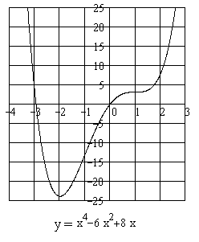

П19.1 №17
Для каждого действительного числа  определите, сколько корней имеет многочлен
.
определите, сколько корней имеет многочлен
.
определите, сколько корней имеет многочлен
.РЕШЕНИЕ:
Вычислим .
Критическими точками производной являются
значения  и
и  .
.
и . Вычисление производной позволяет заключить, что
 для и
для и
 для ,
и сделать вывод, что в точке функция
для ,
и сделать вывод, что в точке функция  принимает минимальное значение . Таким образом, для всех .
принимает минимальное значение . Таким образом, для всех .
для и
для ,
и сделать вывод, что в точке функция принимает минимальное значение . Таким образом, для всех .При и
многочлен имеет один корень; при график
многочлена не имеет общих точек с осью  и,
соответственно, корней; при – два
корня.
и,
соответственно, корней; при – два
корня.
и,
соответственно, корней; при – два
корня.